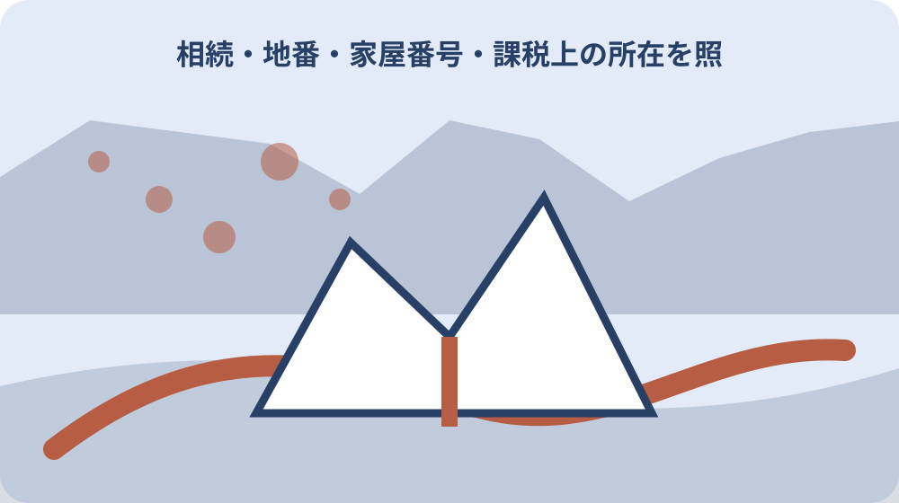

先に結論を確認する
この記事の答え：誰がいつ利用するか、税・保険・管理費をどう負担するか、修繕をどう承認するか、売却・賃貸・保留をどう判断するかの四欄を先に確認します。
森町で最初に照合する条件：利用・費用・修繕・将来判断を共有登記前に話す
兄弟共有を選ぶ前に四つの合意欄を開く
森町の実家を兄弟共有で相続する前に、持分だけでなく、誰が使うか、費用をどう負担するか、修繕をどう決めるか、売却・賃貸等をどう判断するかを一件の合意表へ分けます。
この記事の答えは、利用、費用、修繕、将来判断の四欄に全員の回答と未合意を残し、共有登記をした後で初めて管理方法を話す状態を避けることです。
共有は家を残せる選択肢ですが、全員が同じ頻度で現地へ行けるとは限りません。居住、物置利用、帰省、空き家管理など想定する使い方を具体化します。
法的な共有ルールと家族の運用ルールは分けます。民法の共有規定を確認しつつ、個別の行為に必要な同意は司法書士や弁護士等へ相談します。
完了条件は必ず共有を選ぶことではありません。共有した場合に未解決となる四論点が見え、単独取得、売却等の別案とも比較できる状態です。
共有合意表の第1欄「兄弟共有を選ぶ前に四つの合意欄を開く」には、提案者、対象物件、必要費用、回答した共有者、未回答者、次回日を残します。家族チャットの一言を切り取らず、全員が同じ資料を見た時点を記録します。
「兄弟共有を選ぶ前に四つの合意欄を開く」について意見が割れた場合は、多数だから直ちに実行できると決めません。行為の内容、緊急性、持分、契約相手を専門家へ示し、必要な同意と適切な書面を確認してから実行担当へ渡します。
兄弟共有を選ぶ前に四つの合意欄を開くという作業名は表の索引にも使います。索引から元資料、担当者、確認日、次の期限へ一回で移れるかを確かめ、家族が別の物件や別の年度の記録を誤って開かないよう物件番号を併記します。
登記持分と実際の費用負担を分ける
登記持分、取得経緯、固定資産税、保険、光熱、草刈り、修繕、交通費を列にします。持分割合だけで現地作業の負担まで自動的に公平になるとは考えません。
民法は共有物の管理費用等を持分に応じて負担する規定を置いています。実際の立替、精算、特別な合意は記録し、個別事情を専門家へ確認します。
税の納付書を受ける代表者と所有者全員を混同しません。森町の共有資産代表者関係様式も確認し、町への届出と家族内負担を分けます。
毎月費用、年一回費用、突発費用を分け、即決できる上限と全員へ相談する金額を決めます。これは家族の運用案であり町の基準ではありません。
立替えた人は請求書、領収書、対象期間、承認を共有します。後年の精算を記憶だけに頼りません。
第2の話合い「登記持分と実際の費用負担を分ける」では、最初に提案内容と対象物件を固定し、各人の希望、費用資料、回答日を別々に記します。前回の発言を推測で賛成へ変えず、今回使った資料の版も残します。
共有者の回答が分かれた「登記持分と実際の費用負担を分ける」は、すぐ多数決へ進めず、予定する行為と緊急性を専門家へ伝えます。必要な同意、契約当事者、書面、実行後の報告を確認してから担当を割り当てます。
登記持分と実際の費用負担を分けるという作業名は表の索引にも使います。索引から元資料、担当者、確認日、次の期限へ一回で移れるかを確かめ、家族が別の物件や別の年度の記録を誤って開かないよう物件番号を併記します。
誰がいつ使うかを具体的にする
居住する人、帰省時だけ使う人、荷物を置く人、使わない人を分けます。鍵を持つことと自由に占有できることを同じにしません。
利用予定は日付、部屋、人数、駐車、光熱使用、清掃、近隣連絡を含めます。重複した場合の調整方法も決めます。
一人が継続居住するなら、費用、修繕、保険、他共有者の立入り、使用対価等を専門家へ相談します。口約束だけで長期化させません。
家財や仏壇、書類の所有者を建物共有と混ぜません。処分・移動の合意を別に取ります。
利用しない兄弟にも状態写真と費用報告を定期共有します。現地へ行かないことを、すべての判断を放棄したことにしません。
共有合意表の第3欄「誰がいつ使うかを具体的にする」には、提案者、対象物件、必要費用、回答した共有者、未回答者、次回日を残します。家族チャットの一言を切り取らず、全員が同じ資料を見た時点を記録します。
「誰がいつ使うかを具体的にする」について意見が割れた場合は、多数だから直ちに実行できると決めません。行為の内容、緊急性、持分、契約相手を専門家へ示し、必要な同意と適切な書面を確認してから実行担当へ渡します。
誰がいつ使うかを具体的にするという作業名は表の索引にも使います。索引から元資料、担当者、確認日、次の期限へ一回で移れるかを確かめ、家族が別の物件や別の年度の記録を誤って開かないよう物件番号を併記します。
日常管理と重要な変更を分ける
換気、郵便、庭木、清掃、小修繕などの日常管理と、増改築、用途変更、長期賃貸、解体、売却など重要な判断を別の承認経路にします。
民法は共有物の変更や管理について異なるルールを置いています。具体的な工事や契約がどの区分か家族だけで断定せず、事前に専門家へ確認します。
緊急漏水や破損では人命・周辺被害を防ぐ応急対応を優先し、実施者、写真、費用、連絡時刻を残します。応急対応後の本工事は改めて合意します。
管理担当へ包括的に任せる範囲と、毎回全員へ確認する範囲を文書化します。曖昧な「任せる」は後の対立につながります。
判断表には提案、資料、回答期限、賛否、保留理由、実施結果を残します。既読だけを同意として数えません。
第4の話合い「日常管理と重要な変更を分ける」では、最初に提案内容と対象物件を固定し、各人の希望、費用資料、回答日を別々に記します。前回の発言を推測で賛成へ変えず、今回使った資料の版も残します。
共有者の回答が分かれた「日常管理と重要な変更を分ける」は、すぐ多数決へ進めず、予定する行為と緊急性を専門家へ伝えます。必要な同意、契約当事者、書面、実行後の報告を確認してから担当を割り当てます。
日常管理と重要な変更を分けるという作業名は表の索引にも使います。索引から元資料、担当者、確認日、次の期限へ一回で移れるかを確かめ、家族が別の物件や別の年度の記録を誤って開かないよう物件番号を併記します。
修繕見積りを部位と緊急度でそろえる
屋根、外壁、水回り、電気、庭木、擁壁等を部位番号で管理し、同じ写真と調査範囲を使って見積りを取ります。
現地へ行く兄弟が見積りを取っても、契約権限や費用負担が自動的に決まるわけではありません。承認欄へ戻します。
緊急、安全維持、価値維持、快適性向上を分けます。全てを一度に直す前提にせず、放置した場合の影響も質問します。
工事後は施工写真、保証、支払、次回点検を共有します。実施した人だけが資料を持つ状態を避けます。
修繕を見送る場合も理由、再確認日、応急措置を残します。何もしない判断を無期限の放置にしません。
共有合意表の第5欄「修繕見積りを部位と緊急度でそろえる」には、提案者、対象物件、必要費用、回答した共有者、未回答者、次回日を残します。家族チャットの一言を切り取らず、全員が同じ資料を見た時点を記録します。
「修繕見積りを部位と緊急度でそろえる」について意見が割れた場合は、多数だから直ちに実行できると決めません。行為の内容、緊急性、持分、契約相手を専門家へ示し、必要な同意と適切な書面を確認してから実行担当へ渡します。
修繕見積りを部位と緊急度でそろえるという作業名は表の索引にも使います。索引から元資料、担当者、確認日、次の期限へ一回で移れるかを確かめ、家族が別の物件や別の年度の記録を誤って開かないよう物件番号を併記します。
森町の税務届と登記を別に扱う
森町の固定資産税様式には相続人代表者指定届や共有資産の代表者に関する様式があります。町への税務連絡を整える資料として確認します。
相続人代表者や納税通知の受取人が、共有物の処分を単独で決められるとは扱いません。登記持分と同意関係を別に確認します。
名寄帳や課税明細で土地・家屋の対象を確認し、共有登記の物件と一致させます。住所だけで複数筆を一括にしません。
町への届出日、登記申請日、家族合意日を別々に残します。三つの手続が同時に終わるとは限りません。
税務の問い合わせ回答は対象年度と担当窓口を記録します。翌年度も同じ扱いと思い込まず更新を確認します。
第6の話合い「森町の税務届と登記を別に扱う」では、最初に提案内容と対象物件を固定し、各人の希望、費用資料、回答日を別々に記します。前回の発言を推測で賛成へ変えず、今回使った資料の版も残します。
共有者の回答が分かれた「森町の税務届と登記を別に扱う」は、すぐ多数決へ進めず、予定する行為と緊急性を専門家へ伝えます。必要な同意、契約当事者、書面、実行後の報告を確認してから担当を割り当てます。
森町の税務届と登記を別に扱うという作業名は表の索引にも使います。索引から元資料、担当者、確認日、次の期限へ一回で移れるかを確かめ、家族が別の物件や別の年度の記録を誤って開かないよう物件番号を併記します。
空き家になる場合の管理担当を決める
誰も居住しない期間は巡回、支払、近隣連絡、書類保管の担当を共有合意表から別の管理表へ渡します。
森町の空き家バンクは町が物件管理を代行する仕組みではありません。登録検討中も所有者側の管理を続けます。
鍵の本数、保管者、入退室記録、台風後確認、草木、郵便、保険を具体化します。共有者全員が誰かやると思わない仕組みにします。
管理を外部委託する場合は契約者、作業範囲、報告先、費用承認を決めます。業者の報告を全共有者へ届けます。
近隣からの連絡窓口は一つにしても、重要判断は合意表へ戻します。窓口担当と決定者を分けます。
共有合意表の第7欄「空き家になる場合の管理担当を決める」には、提案者、対象物件、必要費用、回答した共有者、未回答者、次回日を残します。家族チャットの一言を切り取らず、全員が同じ資料を見た時点を記録します。
「空き家になる場合の管理担当を決める」について意見が割れた場合は、多数だから直ちに実行できると決めません。行為の内容、緊急性、持分、契約相手を専門家へ示し、必要な同意と適切な書面を確認してから実行担当へ渡します。
空き家になる場合の管理担当を決めるという作業名は表の索引にも使います。索引から元資料、担当者、確認日、次の期限へ一回で移れるかを確かめ、家族が別の物件や別の年度の記録を誤って開かないよう物件番号を併記します。
売る・貸す・住む・保留を同じ資料で比べる
将来案を売却、賃貸、一人居住、共同利用、解体、保留に分け、必要な費用、手続、同意、期限、未確認を並べます。
査定額だけで結論を決めません。道路、境界、建物状態、残置物、登記、農地等の条件も確認します。
一人が取得する案では代償金、資金、税務等を専門家へ相談します。共有を避けるために無理な資金計画を決めません。
保留を選ぶ場合は保留期限、管理担当、年間費用、再検討条件を決めます。何も決めない状態と区別します。
比較表は各案を公平に見るための家族資料であり、専門的な価格・税・法律判断を代替しません。
第8の話合い「売る・貸す・住む・保留を同じ資料で比べる」では、最初に提案内容と対象物件を固定し、各人の希望、費用資料、回答日を別々に記します。前回の発言を推測で賛成へ変えず、今回使った資料の版も残します。
共有者の回答が分かれた「売る・貸す・住む・保留を同じ資料で比べる」は、すぐ多数決へ進めず、予定する行為と緊急性を専門家へ伝えます。必要な同意、契約当事者、書面、実行後の報告を確認してから担当を割り当てます。
売る・貸す・住む・保留を同じ資料で比べるという作業名は表の索引にも使います。索引から元資料、担当者、確認日、次の期限へ一回で移れるかを確かめ、家族が別の物件や別の年度の記録を誤って開かないよう物件番号を併記します。
合意できない項目を空欄にしない
意見が割れた項目は未合意と表示し、賛否の理由、必要な追加資料、次回日を残します。空欄は未回答か賛成か分かりません。
感情や過去の負担も無視せず、事実欄とは分けて記録します。費用資料と家族の希望を同じ数字欄へ混ぜません。
回答期限を過ぎた場合に同意とみなす運用は避けます。重要判断は明確な返答を確認します。
当事者だけで話が進まない場合は、司法書士、弁護士、税理士、不動産業者等へ論点に応じて相談します。
相談時には共有物件、持分、利用、費用、提案、未合意を一枚で示します。感情の仲裁を専門職へ丸投げせず、確認したい事項を具体化します。
共有合意表の第9欄「合意できない項目を空欄にしない」には、提案者、対象物件、必要費用、回答した共有者、未回答者、次回日を残します。家族チャットの一言を切り取らず、全員が同じ資料を見た時点を記録します。
「合意できない項目を空欄にしない」について意見が割れた場合は、多数だから直ちに実行できると決めません。行為の内容、緊急性、持分、契約相手を専門家へ示し、必要な同意と適切な書面を確認してから実行担当へ渡します。
合意できない項目を空欄にしないという作業名は表の索引にも使います。索引から元資料、担当者、確認日、次の期限へ一回で移れるかを確かめ、家族が別の物件や別の年度の記録を誤って開かないよう物件番号を併記します。

決定履歴と資料版を残す
合意表には版番号、作成日、参加者、変更項目を付けます。古い表を削除せず、いつ何が変わったか追えるようにします。
家族チャットの賛成だけで正式合意にせず、対象物件と行為、費用、期限を表へ戻して確認します。
見積りや登記事項が更新されたら添付資料の版も更新します。古い金額で承認を取り続けません。
署名等が必要か、契約・登記の方式は専門家へ確認します。家族表だけで法的書面が完成したとは扱いません。
決定後は実行担当、完了証拠、支払、次回確認まで記録し、決めただけで案件を閉じません。
第10の話合い「決定履歴と資料版を残す」では、最初に提案内容と対象物件を固定し、各人の希望、費用資料、回答日を別々に記します。前回の発言を推測で賛成へ変えず、今回使った資料の版も残します。
共有者の回答が分かれた「決定履歴と資料版を残す」は、すぐ多数決へ進めず、予定する行為と緊急性を専門家へ伝えます。必要な同意、契約当事者、書面、実行後の報告を確認してから担当を割り当てます。
決定履歴と資料版を残すという作業名は表の索引にも使います。索引から元資料、担当者、確認日、次の期限へ一回で移れるかを確かめ、家族が別の物件や別の年度の記録を誤って開かないよう物件番号を併記します。
大石の視点：共有は保留箱にしない
ここまでの共有物の利用・管理・費用に関する法令と森町の税務様式は公的資料で確認できる事実です。個別行為の同意要件は専門家へ確認します。
私、大石浩之は、話合いが難しいから共有にしておく、という決め方を避けるよう勧めます。これは町の指定判断ではなく、管理負担を将来へ見えないまま送らないための実務提案です。
共有を選ぶこと自体が悪いのではありません。利用、費用、修繕、将来判断を具体的に決められる家族には、実家を残す選択肢になります。
一方、連絡が取れない、費用を決められない、管理者がいない状態では、共有後に問題が増えます。未合意を先に見えるようにします。
まだ売ると決めていなくても、四欄を埋めれば保留期間の管理ができます。価格より先に合意できる範囲を確かめます。
共有合意表の第11欄「大石の視点：共有は保留箱にしない」には、提案者、対象物件、必要費用、回答した共有者、未回答者、次回日を残します。家族チャットの一言を切り取らず、全員が同じ資料を見た時点を記録します。
「大石の視点：共有は保留箱にしない」について意見が割れた場合は、多数だから直ちに実行できると決めません。行為の内容、緊急性、持分、契約相手を専門家へ示し、必要な同意と適切な書面を確認してから実行担当へ渡します。
大石の視点：共有は保留箱にしないという作業名は表の索引にも使います。索引から元資料、担当者、確認日、次の期限へ一回で移れるかを確かめ、家族が別の物件や別の年度の記録を誤って開かないよう物件番号を併記します。
四欄と次回日を確認して結論を出す
最後に利用、費用、修繕、将来判断の各欄を開き、全員の回答、未合意、追加資料、相談先を確認します。
共有を選ぶなら持分、管理担当、支払方法、緊急対応、定期報告、再検討日を明記します。
別案を選ぶなら単独取得、売却等へ必要な専門確認を一覧から移します。共有案の資料も比較経過として残します。
決定しない場合は保留期限と管理費を設定し、状態悪化を確認する巡回を続けます。
結論は、兄弟共有を登記してから考えるのではなく、利用・費用・修繕・将来判断の四つを先に合意し、未合意なら別案と専門相談へ進むことです。
第12の話合い「四欄と次回日を確認して結論を出す」では、最初に提案内容と対象物件を固定し、各人の希望、費用資料、回答日を別々に記します。前回の発言を推測で賛成へ変えず、今回使った資料の版も残します。
共有者の回答が分かれた「四欄と次回日を確認して結論を出す」は、すぐ多数決へ進めず、予定する行為と緊急性を専門家へ伝えます。必要な同意、契約当事者、書面、実行後の報告を確認してから担当を割り当てます。
四欄と次回日を確認して結論を出すという作業名は表の索引にも使います。索引から元資料、担当者、確認日、次の期限へ一回で移れるかを確かめ、家族が別の物件や別の年度の記録を誤って開かないよう物件番号を併記します。